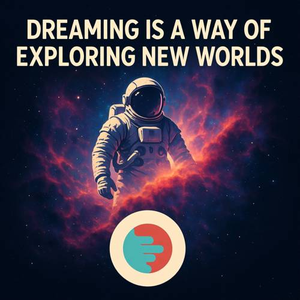
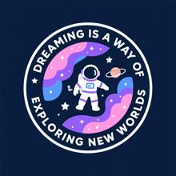
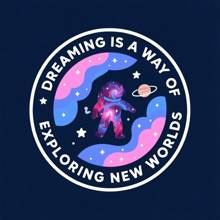

Text Generation — An astronaut made of a nebula is surrounded by the English slogan "Dre
An astronaut made of a nebula is surrounded by the English slogan "Dreaming is a way of exploring new worlds" and a flat logo design.

Direct — one call, no iterationContinuum — Qwen3.8-27B + Qwen-Image
Judge — Direct
PASSText Generation — The image features the English slogan 'DREAMING IS A WAY OF EXPLORING NEW WORLDS' in large, white, sans-serif capital letters at the top. The text is spelled correctly and matches the prompt's requirement exactly.
FAILCompound - Imagination — The image depicts a figure in a standard, solid-appearing astronaut suit, including a helmet and backpack. This astronaut is positioned in front of a background of a colorful red and blue nebula. The astronaut itself is not made of the nebula but is a separate, solid entity within the nebula environment.
Judge — Continuum
PASSText Generation — The image contains a circular logo with text written along its border. The text accurately spells out the English slogan 'DREAMING IS A WAY OF EXPLORING NEW WORLDS' in white, all-caps letters, matching the prompt's requirement exactly.
PASSCompound - Imagination — The central figure in the image is an astronaut. The interior of the astronaut's suit is not a solid color but is filled with a swirling pattern of pink, purple, and blue, with bright spots resembling stars, which visually represents a nebula. This is an imaginative concept impossible in real life.
What the agent did
Thinking
Let's break down this prompt: 1. An astronaut made of a nebula (the astronaut's suit is composed of nebula clouds/galaxy-like stuff) 2. Surrounded by the English slogan "Dreaming is a way of exploring new worlds" 3. A flat logo design (i.e., the overall style is flat design, with a flat logo-like quality) In other words, I need to generate an image that has flat design aesthetics, with a nebula astronaut and a slogan wrapped around it. The slogan is a long phrase: "Dreaming is a way of exploring new worlds". Let's generate with qwen-image. For the prompt, I should write it in a way that emphasizes the exact slogan text. Qwen-Image is good at text rendering. Let's craft a detailed prompt: "Flat design poster, an astronaut figure made of swirling purple and pink nebula clouds and starry cosmos, floating in deep space, surrounded by the text slogan 'Dreaming is a way of exploring new worlds' arranged as a circular ring around the astronaut, flat vector style, bold clean typography, minimal, space theme with small flat stars and planets" Hmm, "surrounded by the slogan" — the text could go in an arc/ring around the astronaut, or it could be placed above and below. A circular text ring around the astronaut is a classic logo design approach, and it fits well with "flat logo design". Let's go with text arranged in a circle (arc) around the astronaut, plus a flat logo mark. Actually, "a flat logo design" is ambiguous — it could mean the overall image is a flat logo design, or that a flat logo should be included. Let's interpret it as: flat design style, with the composition looking like a logo/emblem — an astronaut emblem with a slogan wrapping around it. The slogan is 44 characters: "Dreaming is a way of exploring new worlds". As circular text it might be small, but it should work. Or split it: arc at the top "DREAMING IS A WAY OF", arc at the bottom "EXPLORING NEW WORLDS". That would be more legible. Let's generate: Prompt: "Flat vector logo design, circular emblem composition, a cute astronaut floating in the center made of purple, pink and blue nebula clouds with tiny stars, the slogan 'DREAMING IS A WAY OF EXPLORING NEW WORLDS' wrapped in an arc around the astronaut in clean bold sans-serif letters, small flat stars and planet accents, deep navy background, minimal flat illustration style, poster" I'm worried that Qwen-Image might mangle the text. Need to check with inspect_region and fix with edits as needed. First, let's start with generate_image using model qwen-image. Default size 1024x1024 — a square logo format fits "flat logo design". Let's do it.
Step 1 — `generate_image`
{
"model": "qwen-image",
"prompt": "Flat vector logo design, circular emblem composition on a deep navy background. In the center floats a friendly astronaut whose spacesuit is made of swirling purple, pink and blue nebula clouds dotted with tiny white stars. The slogan \"DREAMING IS A WAY OF EXPLORING NEW WORLDS\" is wrapped in a smooth arc around the astronaut in clean bold white sans-serif capital letters, evenly spaced like a badge. A few small flat stars, a small flat planet with a ring, and thin orbital circle accents surround the astronaut. Minimal flat illustration style, clean shapes, no gradients on the background, logo/emblem aesthetic, poster.",
"width": 1024,
"height": 1024
}
Result img_0

Thinking
The image looks great. Let me check the details: 1. An astronaut made of nebulae — hmm, the astronaut itself looks like a white/flat astronaut, and the nebulae are the background swirls around it. The prompt said "an astronaut made of nebulae," but the astronaut's suit is white, and the nebulae are clouds around it. You could say it's a partial fit. Actually, looking more carefully, the astronaut is a standard flat white astronaut, and the nebulae are swirls behind/around it. The requirement is "an astronaut made of nebulae." This might be a problem. But it could also be interpreted as an astronaut within a nebula. Hmm. The prompt says "an astronaut made of nebulae is surrounded by an English slogan… and a flat logo design." So the astronaut should be made of nebulae. Currently, the astronaut is white and flat, and the nebulae are separate clouds. Let me inspect the text first — check whether the slogan is spelled correctly: top "DREAMING IS A WAY OF," bottom "EXPLORING NEW WORLDS." At a glance it looks correct. Let me zoom in on the text area to check the spelling. Also, let me check whether the astronaut's hands/details are fine. Let me inspect the region.
Model
The first result looks promising — let me verify the slogan spelling and details by zooming in.
Step 2 — `inspect_region`
{
"image": "img_0",
"roi": "the top arc of text around the emblem",
"padding": 0.1
}
Step 3 — `inspect_region`
{
"image": "img_0",
"roi": "the bottom arc of text around the emblem",
"padding": 0.1
}
Thinking
The text-based ROI didn't work. I'll use a rectangular region instead. The image is 1024x1024. The top arc text is roughly y=150 to 420, x=150 to 870. The bottom arc text is roughly y=550 to 830, x=150 to 870.
The upper arc reads "DREAMING IS A WAY OF" (partially cut off: "DREAMING IS A WAY O..."). The lower arc reads "EXPLORING NEW WORLDS". The text looks correct. Let me also check the middle portion—the right side says "OF", and the left side probably says "A". To verify the entire slogan, let me check the full ring: "DREAMING IS A WAY OF EXPLORING NEW WORLDS". From the full image: upper-left "DREAMING IS A", upper-right "WAY OF", lower-left "EXPLORING", lower-right "NEW WORLDS". Looks complete. Next, about the astronaut: the user wanted "an astronaut made of nebula." In the current image, the astronaut is a white flat suit, and the nebula is clouds surrounding it. This is a deviation from the prompt. Should I edit to make the astronaut itself nebula-colored? The prompt says "an astronaut made of nebula is surrounded by the English slogan... and a flat logo design." Hmm, the emphasis might be more on the overall composition: a nebula astronaut within a flat logo with the slogan. The current image has a white astronaut + nebula swirls. Making the astronaut itself nebula (filling the suit with purple/pink nebula clouds and stars) would match better. Let me try editing: "make the astronaut's suit made of nebula clouds—fill the white spacesuit with swirling purple and pink nebula clouds and tiny stars, so the astronaut itself looks made of nebula". This is a change focused on a single region (the astronaut). Let me try edit_image with a targeted instruction. Risk: it might break the flat logo look or the text. edit_image usually localizes well. Let me try it. No wait—before editing, is it worth it? The current image already reads as "an astronaut inside a nebula, flat logo, slogan." The benchmark policy says to check whether all elements of the prompt exist and are correct. "An astronaut made of nebula"—the astronaut is not made of nebula; the nebula is around it. I think an edit to make the suit nebula-colored is justified, and there's a high chance it will succeed while keeping the flat style. Let me do the edit on img_0 with model qwen-image.
Model
The text is spelled correctly. There is one point that deviates from the prompt: the astronaut's suit is white, but the prompt calls for an astronaut *made of nebula*. I'll edit the astronaut itself into a nebula.
Step 6 — `edit_image`
{
"image": "img_0",
"model": "qwen-image",
"prompt": "Change the astronaut's white spacesuit so the astronaut itself is made of nebula: fill the suit, helmet and backpack with the same swirling purple, pink and blue nebula clouds and tiny white stars as the clouds around it, while keeping the astronaut's flat vector shape, outline and pose exactly the same. Do not change the circular text, the ring, the planet, or the background."
}
Result img_3

Thinking
The astronaut is now made of nebula — the suit and helmet are filled with swirling purple/pink/blue nebulae and stars. The slogan remains intact: "DREAMING IS A WAY OF EXPLORING NEW WORLDS". Flat logo design, circular emblem, ring, planet — all preserved. Let's inspect the astronaut area and the text to confirm that the text hasn't been altered. In the thumbnail, the text appears to be the same. Just to be safe, let's zoom in on the astronaut area and one of the text areas to double-check.
Model
The astronaut is now made of nebula. Let me verify the details stayed intact.
The astronaut is now clearly made of nebulae — a swirling galaxy inside the helmet, and a pink/purple/blue nebula with stars filling the entire suit. The upper text is still correctly "DREAMING IS A WAY OF". Let me quickly check the bottom arc too.
The bottom arc correctly reads "EXPLORING NEW WORLDS". Everything confirmed: 1. ✅ Astronaut made of nebulae — the suit and helmet are filled with swirling purple/pink/blue nebulae and stars 2. ✅ English slogan "Dreaming is a way of exploring new worlds" — the full text, in all caps, wrapping around the emblem ("DREAMING IS A WAY OF" on top, "EXPLORING NEW WORLDS" on the bottom), spelling verified 3. ✅ Flat logo design — flat vector style, circular badge/emblem, flat stars, ringed planet, clean shapes This is a good result. I'll mark img_3 as the best and stop here.
Model
All elements have been verified: the astronaut is composed of swirling nebulae, the complete slogan is spelled correctly in both arcs, and the flat logo/badge aesthetic is preserved.
Step 10 — `mark_best`
{
"image": "img_3",
"reason": "Nebula-made astronaut verified by zoom, full slogan \"DREAMING IS A WAY OF EXPLORING NEW WORLDS\" spelled correctly in both arcs, flat circular logo design intact."
}
Thinking
Done. Final result: img_3 is marked as the best. Let me summarize concisely.
Model
Done. The final image (marked as best) is a flat vector logo/emblem featuring: - **Astronaut made of a nebula** — the suit and helmet are filled with swirling purple, pink and blue nebula clouds and tiny stars, with a galaxy swirl in the visor. - **The full slogan** "DREAMING IS A WAY OF EXPLORING NEW WORLDS" wrapped in arcs around the emblem — spelling verified by zooming into both arcs. - **Flat logo design** — circular badge with a white ring, flat stars, a small ringed planet, and clean flat shapes on a deep navy background.